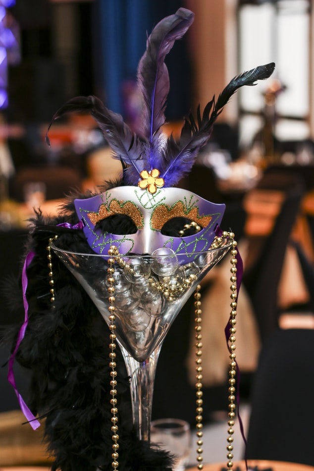

About Mardi Gras
Mardi Gras or Fat Tuesday, refers to events of the Carnival celebration, beginning on or after the Christian feasts of the Epiphany (Three Kings Day) and culminating on the day before Ash Wednesday, which is known as Shrove Tuesday. Mardi Gras is French for "Fat Tuesday", reflecting the practice of the last night of eating rich, fatty foods before the ritual Lenten sacrifices and fasting of the Lenten season. Related popular practices are associated with Shrovetide celebrations before the fasting and religious obligations associated with the penitential season of Lent. In countries such as the United Kingdom, Mardi Gras is also known as Shrove Tuesday, which is derived from the word shrive, meaning "to administer the sacrament of confession to; to absolve"
History
133–31 BC Some think Mardi Gras may be linked with the ancient Roman pagan celebrations of spring and fertility such as Saturnalia, which dates back to 133–31 BC. This celebration honored the god of agriculture, Saturn. It was observed in mid-December, before the sowing of winter crops. It was a week-long festival when work and business came to a halt. Schools and courts of law closed, and the normal social patterns were suspended. On the Julian calendar, which the Romans used at the time, the winter solstice fell on December 25. Hence, the celebration gradually became associated with Christmas.
About The Mayor

LaToya Cantrell is an American politician serving as the Mayor of New Orleans, Louisiana, a post she has held since May 7, 2018. Cantrell, a Democrat, is the first black woman to hold the post. Before becoming mayor, Cantrell represented District B on the New Orleans City Council from 2012–2018.
